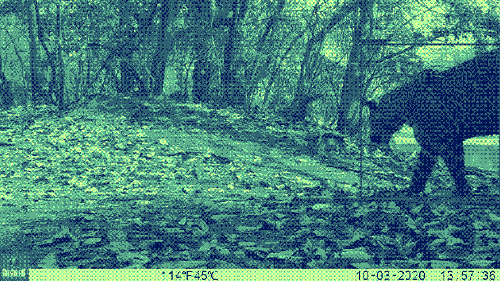
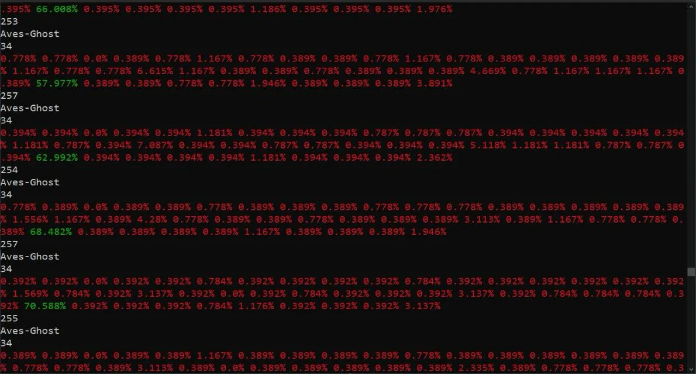
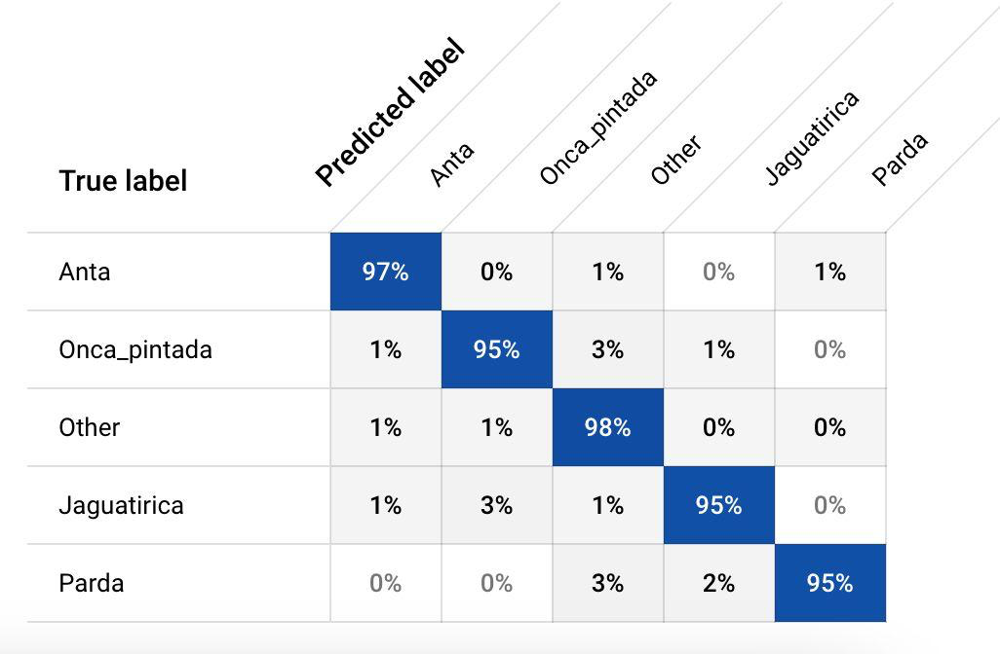
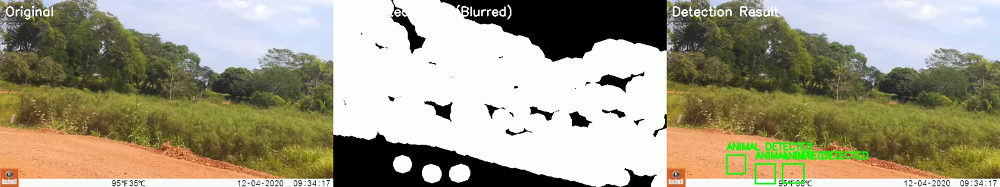
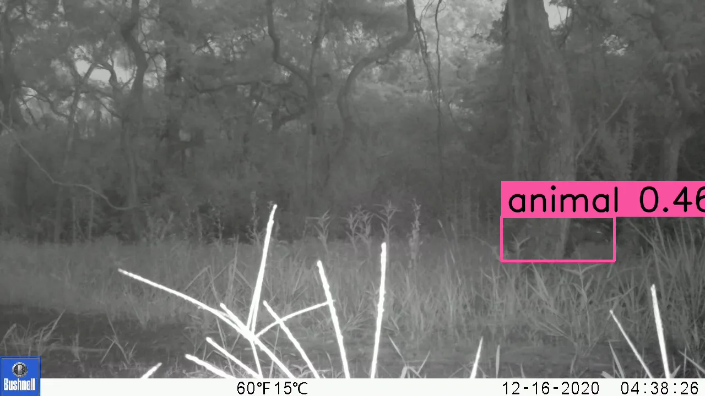
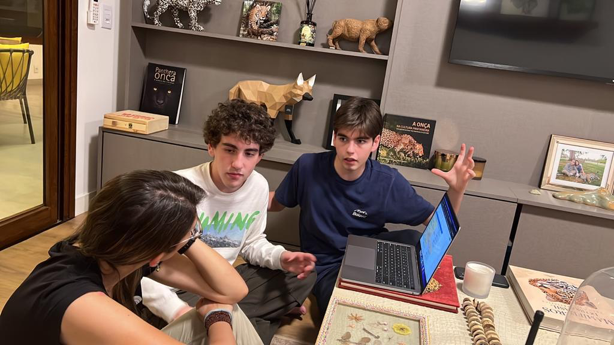
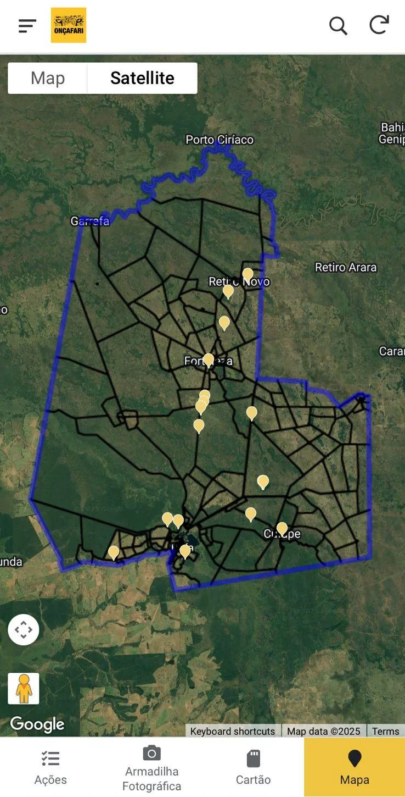
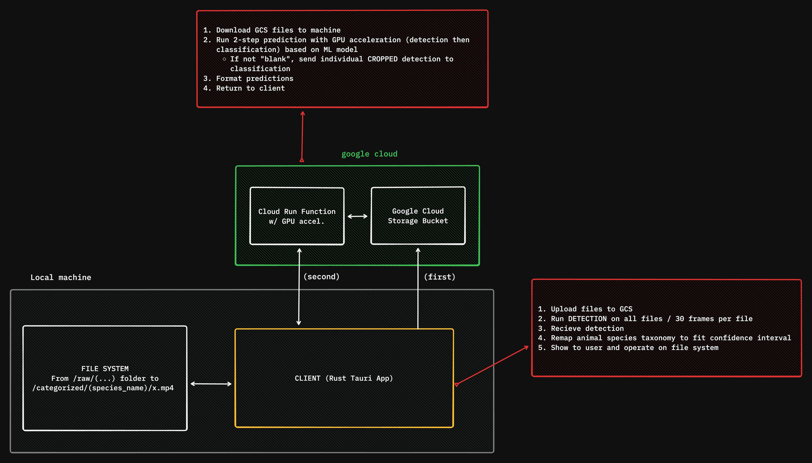

Since 2022 I've led machine learning research at Onçafari, Latin America's largest animal conservation NGO, together with Felipe Barbosa and, from 2023, Rafael Souza.
The goal is simple to state: given a 30 second camera trap video, say whether there's an animal in it and, if so, which one, fast enough to keep up with the field. Today our pipeline does this at 99.5% per-video accuracy in about one second per video.
This post covers two things: how we got the model there, and how we got the biologists to actually use it. The second turned out to be just as hard as the first.
The problem
Onçafari runs 17 bases covering about 2 million hectares, watched by roughly 350 camera traps. A camera trap is a motion-activated camera strapped to a tree. Every 15 days someone swaps its memory card, which holds 250 to 1,000 videos. Biologists use that footage for population studies, tracking individual animals, surveys of rare species and published papers.
The catch is that most clips are false triggers: wind, a change in light, a falling leaf. Someone still has to watch every one to find the real ones. That added up to more than 6,000 hours of manual review a year.
Part 1: the model
2022: from 18% to 86%
We started with 500 labeled videos split evenly across five classes: jaguar, anteater, puma, ocelot and other. Each clip is 30 seconds at 24 fps, so 720 frames.
Our first model was a dense neural network that looked at single frames, with every frame labeled with its clip's class. It scored 18%, worse than the 20% you'd get by guessing at random.
Three things were wrong:
- Bad labels. About 5% of the videos were mislabeled.
- Bad frame labels. The animal is only on screen for a few seconds, so most frames in a "jaguar" clip don't contain a jaguar. We were teaching the model that empty grass is a jaguar.
- Too little data. 100 videos per class isn't much.
We relabeled all 500 videos by hand. To fix the frame problem without marking timestamps, we used a property of camera traps: the animal is what triggers the recording, so it's almost always on screen near the start. We sampled training frames with a weight that decays over the clip, so most of them come from the first few seconds. Flips and color shifts then turned 500 videos into about 8,000 training examples. After eight hours of training on a home PC, the model reached 86%.

The 86% model's output. Each row is one prediction, with the top class in green.
That result got us 200,000 videos from Onçafari's archive (about 1,700 hours of footage), and brought Rafael Souza, then at Google, on as a mentor. That's only a slice of everything Onçafari has recorded, but it was more than enough to train on. And it came already labeled: years of the team's manual review had tagged every video with what was in it.
2023: scaling up
We moved training to Google Cloud (Vertex AI) and trained the same five-class model on those 200,000 videos. Accuracy dropped to 80%. The real data was much messier than our hand-picked 500: unbalanced, noisier, and full of species we hadn't planned for.
So we split the problem in two:
- a detector that finds whether there's an animal and where it is, and
- a classifier that looks only at that cropped region and decides the species.
We first tried off-the-shelf detectors, YOLO and MegaDetector. Both struggled with partly hidden animals, which in the Pantanal is most of them: half behind grass, lit only by infrared at night, or small at the edge of the frame. So we trained our own detector and classifier on Onçafari's footage, which reached 95–98% accuracy per class.

The remaining problem was the other class. Peccaries, caimans, birds and cattle all landed there, and someone still had to sort that pile by hand.
What didn't work
We also tried detecting motion directly. Background subtraction (OpenCV's MOG2) flags pixels that change between frames and draws boxes around them. On our footage the background moved more than the animals did: wind turned whole treelines into "motion," and swaying grass got boxed as animals. Transformer-based video models ran into the same noise.

Background subtraction on one of our clips: original, motion mask, detections. Wind alone produces a dozen false boxes.
2025: SpeciesNet, applied to video
By 2025 there was a better starting point than our own models: SpeciesNet, Google's open-source camera trap model, pretrained on millions of images. It covers far more species than our original four, so we customized it for every animal found in the Pantanal, from tapirs and maned wolves to caimans and cattle. That finally emptied the other bucket.
SpeciesNet works on single images, and its detector is MegaDetector, the same one that missed hidden animals in 2023. Run frame by frame, it still does. In the clip below it only finds the animal in 16 of 61 frames, and its best box has 0.46 confidence.

MegaDetector on a partly hidden animal. It found it in 16 of 61 sampled frames.
Our fix was to stop judging single frames. For each video we run detection on 30 of its 720 frames, classify each detected crop, and combine those predictions into one label for the whole video. The animal only needs to be found in some frames, not all of them. When no species is confident enough, the label falls back to the genus or family instead of guessing.
That runs at about one second per video on a single T4 GPU, so all 200,000 videos take about 56 GPU-hours.
To measure accuracy we used new footage from recent field campaigns, which the model had never seen in training. The team sorted each campaign by hand as usual, we ran the model on the same videos, and we compared the two. The model agreed with the hand labels on 99.5% of videos, and that number has held across many campaigns. Even part of the remaining 0.5% wasn't the model's fault: when we looked at disagreements, the hand label was sometimes the wrong one. People get tired after hours of watching grass move.
Summary
| Year | Approach | Accuracy |
|---|---|---|
| 2022 | Single-frame CNN, 500 videos | 18% |
| 2022 | + clean labels, early-frame sampling, augmentation | 86% |
| 2023 | Same model, 200k videos | 80% |
| 2023 | Own detector + classifier | 95–98% per class |
| 2025 | Customized SpeciesNet over 30 frames per video | 99.5% per video |
Part 2: getting it used
The ResourceSpace version (2023)
Our first deployment ran the classifier in the cloud and put the sorted videos into ResourceSpace, an open-source media library, so the team could browse them. We piloted it at the Caiman base, which has 97 cameras over 53,000 hectares.

Tracking the cameras (2024)
Not every problem was a model problem. Cameras, batteries and memory cards were tracked on paper, and a camera logged with the wrong coordinates was as good as lost. So we built an AppSheet app on top of Onçafari's Google Sheets that keeps every camera's location, maintenance history and status in one place.

The local version (2025)
On a trip to the Pantanal I found out the team wasn't really using the ResourceSpace version. On paper, the complaints were about the model: a mislabeled clip here, a missed animal there. They were small issues, and the kind we had been fixing all along. Watching people work, though, I saw the real reason. Their analysis lives in spreadsheets, and getting results out of ResourceSpace meant copying them over by hand, which took long enough to cancel out the time the model saved. The model's mistakes were an easy reason to give for not using it. We hadn't removed the bottleneck, just moved it.
Looking back, the ResourceSpace version was also me learning about the wonders of scope creep. We wanted a flashy solution: a full platform with a media library, previews and search. What the team actually needed was much less: their videos, sorted, in the folders they already used. People won't switch to a tool that's better in theory if it makes their day more annoying. It has to fit how they already work.
So over a weekend I built our first real app: a small desktop program (Rust, using Tauri) that runs locally on the biologists' own laptops. They copy a memory card into a /raw/ folder as usual. The app uploads the videos to Cloud Storage, gets predictions from a GPU-backed Cloud Run function, and moves each video into /categorized/<species>/ in the same folders they already work in. There's no new tool to learn and no export step. This is the version the team has used since May 2026, and the complaints about the model stopped.

Results
The biologists no longer check the footage by hand. They trust the model's sorting and go straight to the species folders they need. At Caiman alone that's about 500 hours a month of review handed back, time they can now spend in the field.
What's next
Sharing the pipeline with other ecology groups so they don't have to start from scratch and embedding models directly into the cameras!
In the news
IA brasileira acelera conservação ambiental
ONG utiliza IA como aliada no monitoramento de fauna do Pantanal
De 'BBB' de onças a semáforo antipoluição: inteligência artificial pode frear crise climática?
Como a nuvem está ajudando a monitorar e preservar a Amazônia
Team
Onçafari Bushmen
- João Barbosa
- Felipe Barbosa
- Rafael Souza
Onçafari
- Mario Haberfeld — CEO
- Liliam Rampim — Caiman Chief
- Rafael Del Prete — Biologist